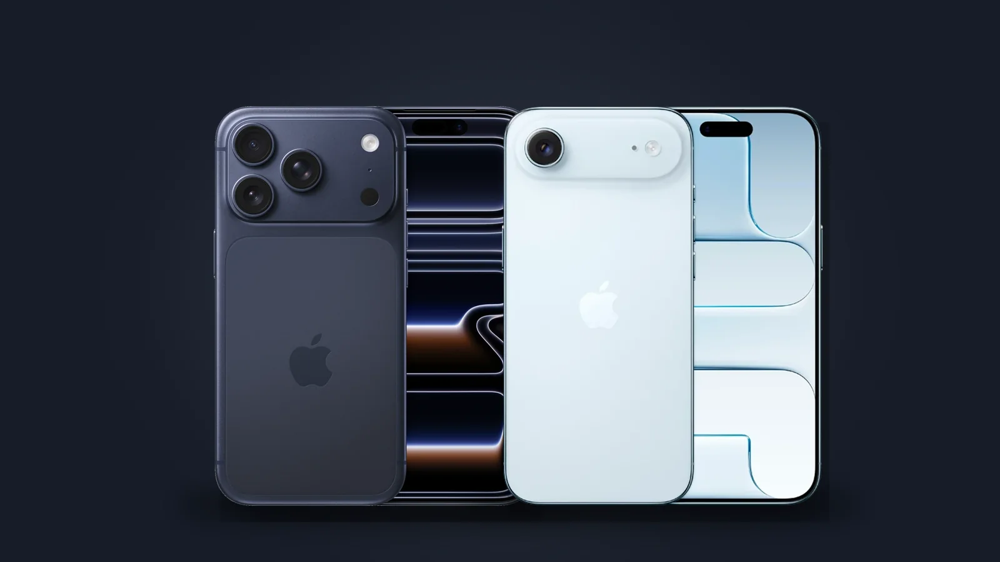

iPhone eSIM-ով, թե Nano-SIM-ով․ որն ընտրել Հայաստանում
Վերջին iPhone Pro մոդելները Հայաստանում վաճառվում են երկու տարբերակով՝ Nano-SIM-ի սկուտեղով և առանց դրա (միայն eSIM)։ Եվ դրանց գները տարբեր են։

Ինչով են տարբերվում
Միայն eSIM տարբերակը ընդհանրապես սկուտեղ չունի․ ձեր համարը պահվում է հեռախոսում՝ որպես eSIM պրոֆիլ։ Nano-SIM տարբերակն ընդունում է ֆիզիկական քարտ և նույնպես աջակցում է eSIM։
Նախքան eSIM ընտրելը
- Հարցրեք ձեր օպերատորին՝ արդյոք այն տրամադրում է eSIM, և ինչպես տեղափոխել համարը դրա վրա։
- Ճամփորդելիս զբոսաշրջային eSIM-երն աշխատում են երկու տարբերակներում էլ։
- Հեռախոսը փոխելիս eSIM-ը պետք է տեղափոխել նոր սարքին, իսկ քարտը բավական է պարզապես տեղափոխել։
Գինը
Better.am-ի iPhone Pro էջերում SIM-ի ընտրությունը հիշողության ծավալի կողքին է, և յուրաքանչյուր խանութի գինը ցուցադրվում է ընտրված տարբերակի համար։ Այսպես տեսնում եք, թե այսօր որքան արժե տարբերությունը՝ առանց գուշակելու։
24.09.2026